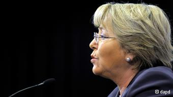

|
|

کنفرانس زنان سازمان ملل خشونت علیه زنان را محکوم کرد
دو شنبه28 اسفند 1391
دویچه وله: کنفرانس زنان سازمان ملل متحد در نیویورک شامگاه جمعه در پایان کار خود بیانیهای را تصویب کرد که در آن بر برابری حقوق زنان و مردان و نیز حمایت از زنان در سراسر جهان تاکید شده است.
پس از دو هفته مذاکره دشوار در کنفرانس زنان سازمان ملل متحد در نیویورک، شامگاه جمعه (۱۵ مارس/۲۵ اسفند) شماری از کشورها از مقاومت خود در برابر یک فرمولبندی در بیانیهی پایانی کنفرانس دست کشیدند و با تصویب آن موافقت کردند. در این فرمولبندی گفته شده است: «خشونت علیه زنان در هیچکجای جهان نباید با آداب و رسوم، سنتها و باورهای مذهبی توجیه شود.»
کشورهای اسلامی مانند ایران، لیبی و سودان و نیز برخی کشورهای غیرمسلمان دیگر، همچون روسیه و واتیکان، در تلاش بودند فرمولبندیای خفیفتر را جایگزین فرمولبندی ذکرشده کنند. این کشورها مخالف استانداردهای سختگیرانه در خصوص خشونت علیه زنان بودند.
این کشورها همچنین مخالف هرگونه اشاره به حق زنان در رابطه با سقط جنین بودند و این فرمولبندی را نیز رد میکردند که رفتار خشونتآمیز مردان علیه همسران یا شریکان زندگیشان نیز مشمول خشونت علیه زنان میشود. آنها در نهایت از مواضع خود کوتاه آمدند.
اما از سوی دیگر کشورهای غربی و بهویژه اسکاندیناوی نیز از خواستهای خود درباره حقوق دگرباشان جنسی دست کشیدند. کشورهای دانمارک و نروژ ائتلافی را در این کنفرانس رهبری میکردند که از فرمولبندیای سختگیرانه در مبارزه با خشونت علیه زنان دفاع میکرد.
بیانیه کنفرانس زنان سازمان ملل از همه دولتها خواسته است که به قوانین و اقدامهای تبعیضآمیز علیه زنان پایان دهند و در کشورهای خود با خشونت علیه زنان مبارزه کنند.
حزب اخوانالمسلمین مصر بیانیهی کنفرانس زنان سازمان ملل را "غیراسلامی" خوانده و هشدار داده است که این بیانیه به "فروپاشی کامل جامعه" خواهد انجامید.

استعفای رئیس کمیسیون زنان سازمان ملل
کمی مانده به پایان کنفرانس، نشانههایی از شکست در مورد توافق بر سر بیانیهی پایانی دیده میشد، اما وقتی اعلام شد که درباره بیانیه توافق حاصل شده است، سالن اصلی سازمان ملل غرق شور و شادی شد. در کنفرانس زنان سازمان ملل علاوه بر دولتهای عضو، نمایندگان حدود ۶ هزار سازمان غیردولتی نیز شرکت داشتند.
در پایان کنفرانس میشل باچلت، رئیسجمهور سابق شیلی (۲۰۰۶ - ۲۰۱۰)، اعلام کرد که از ریاست کمیسیون زنان سازمان ملل کنارهگیری میکند. او پس از خواندن بیانیهی پایانی کنفرانس گفت: «حال یک اطلاعیه شخصی. مسئولیت من نیز در ریاست کمیسیون زنان سازمان ملل به پایان رسیده و من به کشورم شیلی برمیگردم.»
باچلت ۶۱ ساله درباره برنامههای آینده خود چیزی نگفت، اما استعفای او این شایعه را دامن زده که قصد دارد بار دیگر در کشورش نامزد ریاست جمهوری شود. بلوک سیاسی متمایل به چپ در شیلی که خانم باچلت به آن تعلق دارد امیدوار است که او در انتخابات ریاست جمهوری نوامبر آینده در شیلی نامزد شود. این پزشک کودکان نخستین زن در شیلی بود که به عالیترین مقام دولتی دست یافت و همچنان در شیلی از محبوبیت برخوردار است.
بان کی مون، دبیرکل سازمان ملل متحد از کار و تلاش خانم باچلت در هدایت شعبههای متعدد سازمان ملل در امور مربوط به زنان ستایش کرد. او گفت: «من میخواهم قدردانی عمیق خود را از خدمات برجسته خانم باچلت اعلام نمایم.» دبیرکل سازمان ملل افزود: «رهبری بینظیر ایشان به تشکیلات زنان سازمان ملل تحرکی را بخشید که به آن نیاز داشت.»
سوزان رایس، نماینده ایالات متحده آمریکا در سازمان ملل، نیز از میشل باچلت با عنوان "رهبری پیگیر و الهامبخش و الگویی برای همه زنان جهان" یاد کرد.